Vandringsleder
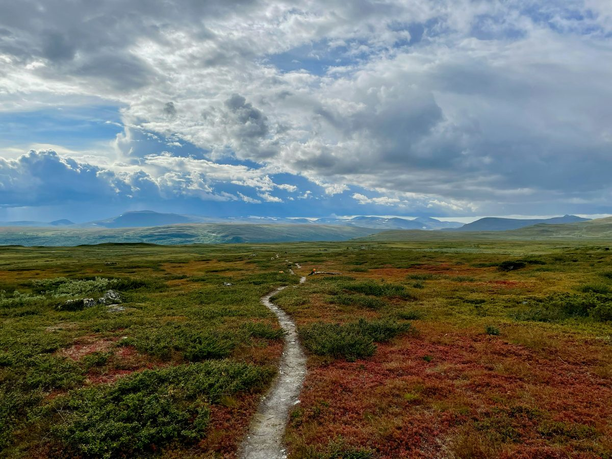
Kungsleden
Ca 450 km
Sveriges mest ikoniska vandringsled genom Lapplands fjäll med spektakulära vyer och STF-stugor längs vägen.
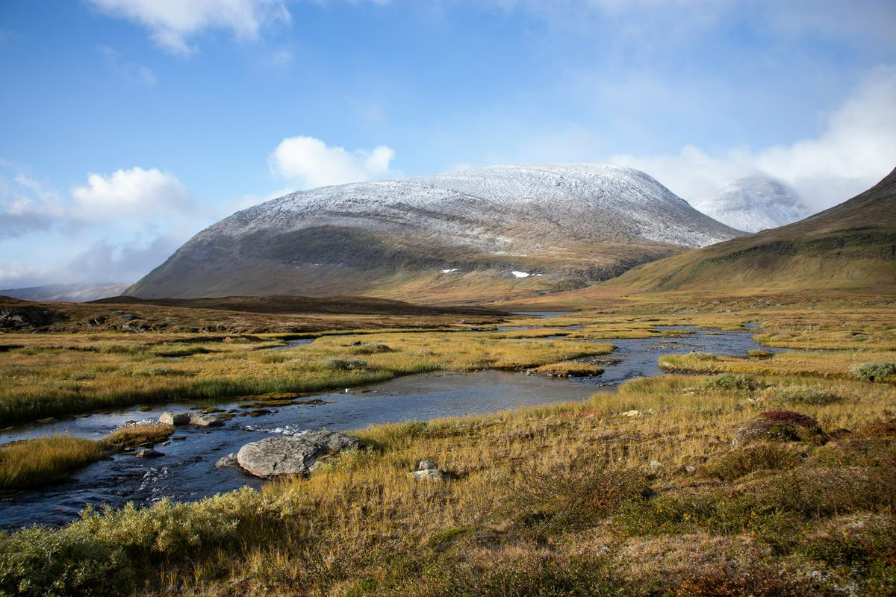
Abisko–Nikkaluokta
Ca 107 km
En klassisk fjällvandring mellan Abisko och Nikkaluokta som passerar Kebnekaisemassivet.
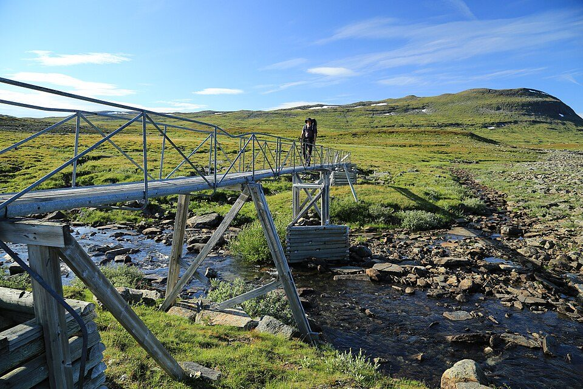
Nordkalottleden
Ca 800 km
En internationell led genom Sverige, Norge och Finland med vidsträckta fjäll och orörd natur.
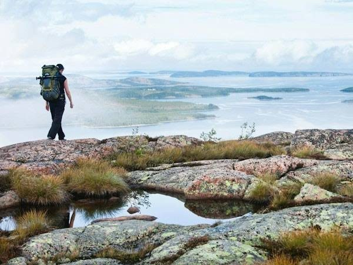
Höga Kustenleden
Ca 130 km
Kustnära vandring med dramatiska klippor, skogar och utsikt över världsarvet Höga Kusten.
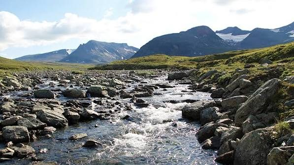
Jämtlandstriangeln
Ca 47 km
En lättvandrad fjällklassiker som passar perfekt för en tredagarstur.

Kebnekaise via Vistasdalen
Ca 55 km tur och retur
En lugnare väg mot Kebnekaise genom den natursköna Vistasdalen.
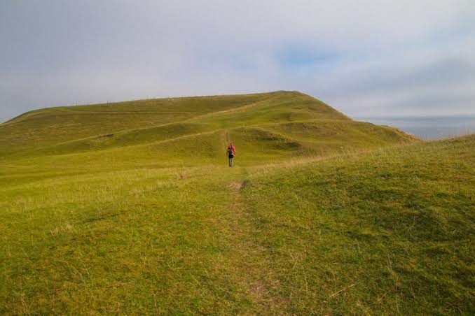
Skåneleden
Över 1 600 km
Ett omfattande ledsystem genom skogar, stränder och böljande landskap i södra Sverige.
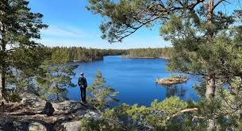
Sörmlandsleden
Över 1 000 km
Många etapper genom sjöar, skogar och kulturmiljöer nära Stockholm.
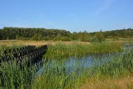
Upplandsleden
Ca 450 km
Naturnära leder genom Uppland med många sjöar och rastplatser.
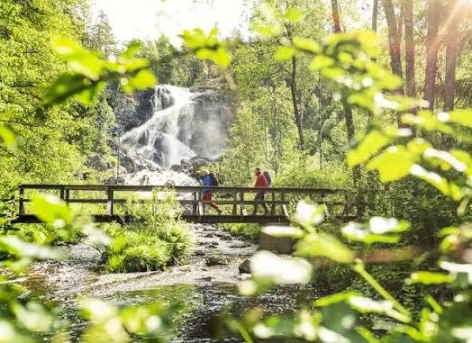
Bohusleden
Ca 370 km
Vandring genom västsvenska skogar, sjöar och kustnära landskap.
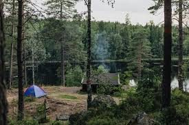
Bergslagsleden
Ca 280 km
Lugn långled genom djupa skogar och historiska bergslagsbygder.
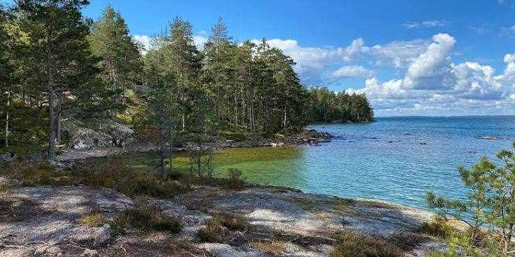
Östgötaleden
Över 1 500 km
Sveriges längsta ledsystem med kust, skogar och kulturmiljöer.
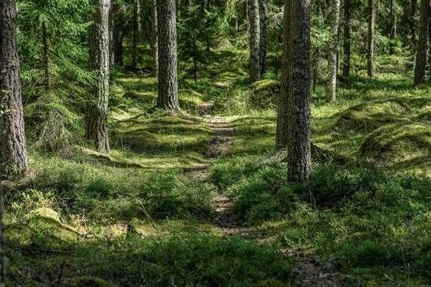
Roslagsleden
Ca 190 km
En lättillgänglig led genom Roslagens skogar och sjöar.
Nationalparker & naturområden
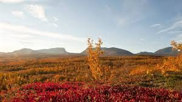
Abisko Nationalpark
Norrsken, midnattssol och fantastiska fjällvyer.
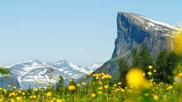
Sarek Nationalpark
Europas kanske mest orörda vildmark utan markerade leder.
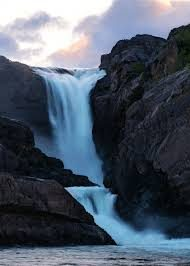
Stora Sjöfallet Nationalpark
Mäktiga fjäll, vattenfall och utsikter över Akkamassivet.
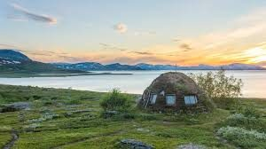
Padjelanta Nationalpark
Vidsträckta fjällhedar, stora sjöar och samisk kultur.
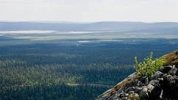
Muddus Nationalpark
Gammelskog, djupa raviner och ett rikt djurliv.

Fulufjället Nationalpark
Njupeskär – Sveriges högsta vattenfall – och den uråldriga granen Old Tjikko.
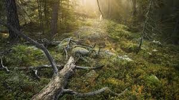
Tyresta Nationalpark
En av Sveriges största urskogar nära Stockholm.
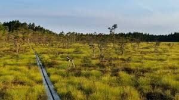
Store Mosse Nationalpark
Sveriges största myrområde söder om Lappland med spänger genom våtmarkerna.
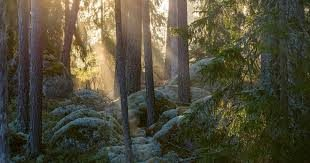
Norra Kvill Nationalpark
Trollskog med flera hundra år gamla tallar och stora flyttblock.
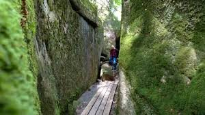
Åsnen Nationalpark
Sjölandskap med öar, rikt fågelliv och fina möjligheter till paddling och cykling.
Specifika vandringsmål
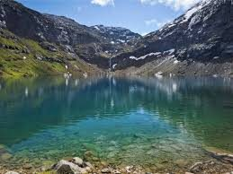
Trollsjön (Kärkevagge)
Sveriges klaraste fjällsjö omgiven av dramatiska berg och stenformationer.
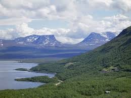
Lapporten
Den ikoniska U-formade dalgången och en av Lapplands mest fotograferade vyer.
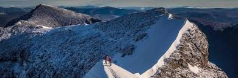
Kebnekaise
Sveriges högsta berg med flera leder till toppen och fantastiska fjällvyer.
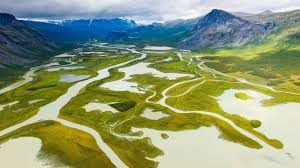
Sarek
En av Europas sista stora vildmarker med glaciärer, dalar och höga toppar.
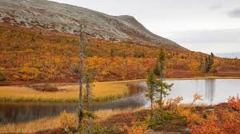
Sonfjället
Nationalpark känd för sin orörda natur och goda möjligheter att se björn.
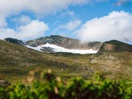
Helags
Hem till Sveriges sydligaste glaciär och populära vandringar över kalfjället.

Hovs Hallar
Dramatiska klippformationer vid havet med spektakulära utsikter över Kattegatt.
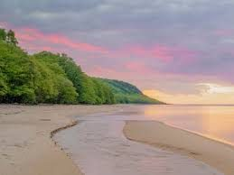
Stenshuvud
Nationalpark där strand, lövskog och utsiktsberg möts på liten yta.
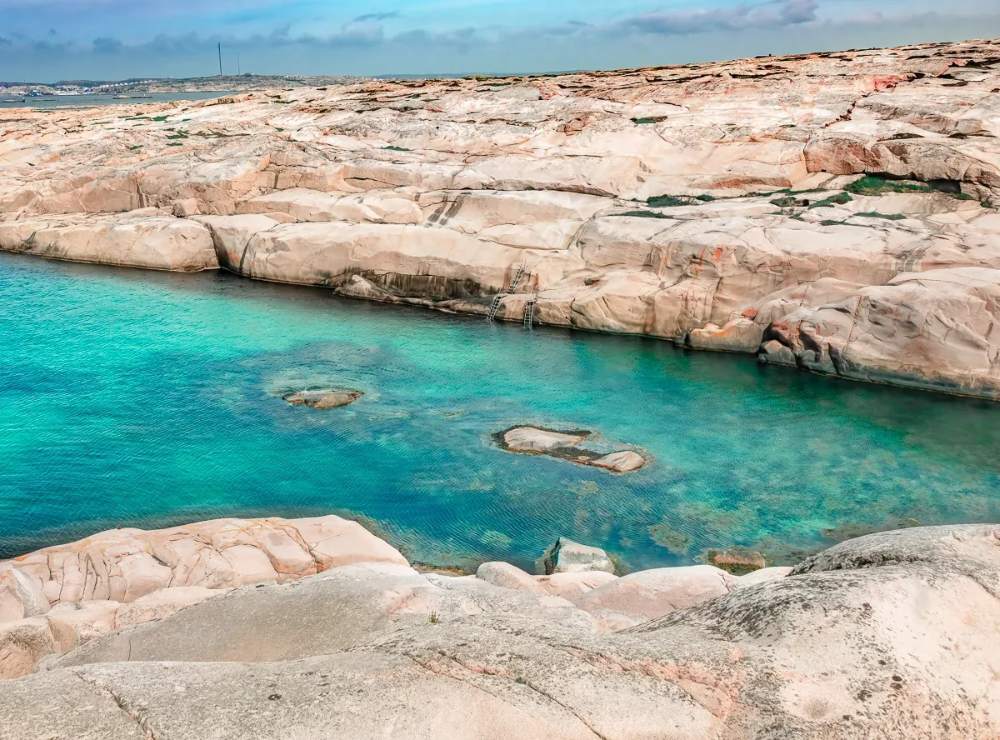
Hållö
Karga granitklippor, fyr och kristallklart hav utanför Smögen.
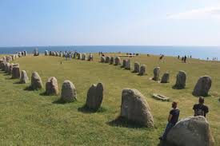
Ales stenar
Historisk skeppssättning med fantastisk utsikt över Östersjön.
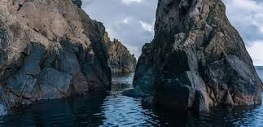
Kullaberg
Branta klippor, grottor och havsvyer på Skånes nordvästra spets.
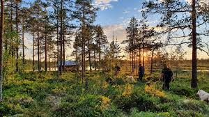
Hamra
Liten nationalpark med gammelskog, myrar och stillsam natur.
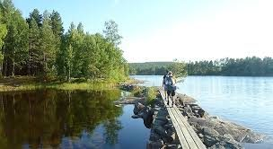
Glaskogen
Stort naturreservat med sjöar, skogar och många vandringsleder.
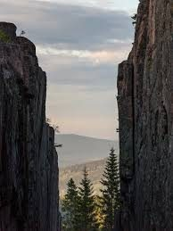
Skuleskogen
Känd för Slåttdalsskrevan och Höga Kustens dramatiska landskap.
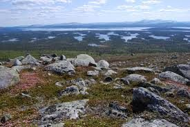
Rogen
Vildmark med stenfält, sjöar och ett nästan arktiskt landskap.
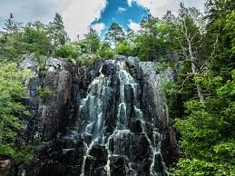
Halle- & Hunneberg
Platåberg med vandringsleder, utsiktsplatser och chans att se älg.